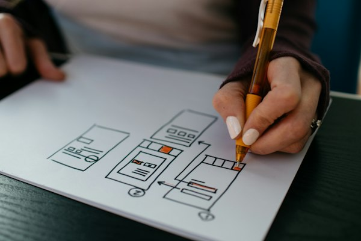

Research before any screens
User experience design starts with interviews, support tickets and recordings of real sessions, so the brief describes what people are trying to do rather than what we assumed.
The design was signed off on a large monitor in a meeting room, and everybody liked it. Six months on, your team fields the same phone call every day, because customers cannot find the one button that matters on a phone screen. Half the enquiry form gets abandoned at the third field. Nobody disliked the design. They simply could not use it, so they rang instead.
Onva Labs treats design as the thing that decides whether software gets used, not a coat of paint applied at the end. We research how your customers and staff actually work, sketch the screens, build clickable prototypes and watch real people attempt real tasks. Accessibility is part of that, designed and checked against WCAG 2.2 AA, so keyboard, screen reader and small-phone users are not quietly excluded.
Six pieces of user experience design work that decide whether people finish what they came to do, or give up quietly and ring somebody in your office instead.
User experience design starts with interviews, support tickets and recordings of real sessions, so the brief describes what people are trying to do rather than what we assumed.

Website wireframing maps every step of a task in plain boxes first, which is far cheaper to argue about than a finished visual design nobody wants to change.
Interactive prototypes let your team walk through a booking, a quote or a checkout before a developer writes code, while changes still cost almost nothing.

Design systems give you reusable buttons, forms, spacing and type rules, so the tenth page a developer builds still looks and behaves like the first one.

Usability testing in Sydney or over a call: people attempt a task while we watch silently, and the pattern in where they stall becomes the fix list.

Conversion focused design built to WCAG 2.2 AA, covering contrast, keyboard navigation, focus order and labels, because a form people cannot use costs you customers.
Design decisions get tested with people outside the project, because the team that built a screen is the worst possible judge of whether a stranger can use it.
Every recommendation arrives with the reasoning attached, so you are choosing between explained options rather than approving a taste call you have no way to argue with.
Accessibility is scoped from the start against WCAG 2.2 AA, which costs far less than retrofitting contrast, labels and keyboard support onto a finished build.
Design files are handed over as a working system with named components and rules, so your developers or ours can build from them without guessing at spacing.
We interview users and staff, review analytics and agree what a successful task actually looks like.
Wireframes and user flows map each step in plain form before anyone argues about colour.
Clickable screens let your team walk the journey and change direction while it is still cheap.
Real people attempt real tasks, we watch quietly, and the design changes to match what happened.
Three services that often sit either side of a design engagement, depending on whether the next step is building it, running a campaign or making it faster.

The build stage for designs that need bespoke screens, logic and integrations rather than a template adjusted until it almost fits.
View service
Single-purpose campaign pages where one offer, one message and one form decide whether paid traffic turns into an enquiry.
View service
Performance work for interfaces that look right but feel slow, measured against Core Web Vitals on real mobile connections.
View serviceNo. Visual polish is the last part of it. Most of the work is deciding what belongs on a screen, in what order, and what happens when somebody makes a mistake. A page can be attractive and still lose customers at the third form field. We change the sequence and the wording, then test whether it helped.
It is the accessibility standard most Australian organisations design towards. In practice it covers readable contrast, text that resizes, every control reachable by keyboard, visible focus, and form fields with real labels. We design and check against it as part of the work. We do not claim certification, because that is assessed by an independent auditor rather than by us.
Fewer than most expect. Watching a handful of people attempt the same task usually surfaces the problems that matter, because the same stumbles repeat. We recruit people who resemble your customers, give them a task rather than a tour, and stay quiet. The value sits in where they hesitate, not in what they say afterwards.
Send us the screen or the flow people keep getting stuck on. We will tell you what is going wrong and what it takes to fix it.